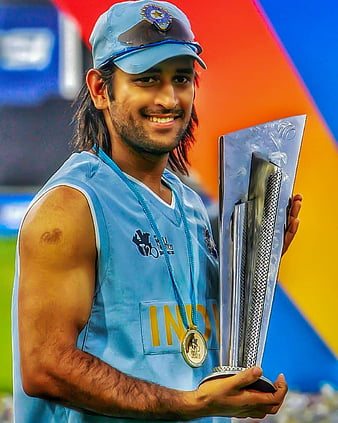
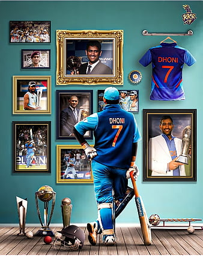

Mahendra Singh Dhoni is one of the most well-known cricketers in the world. Successful cricketers in Indian history. He holds several...
Mahendra Singh Dhoni is one of the most well-known cricketers in the world. Successful cricketers in Indian history. He holds several records, including most runs scored in International Cricket Council (ICC) tournaments, most wickets taken by captains in Tests, and the fastest half-century in ODIs. He is also the first captain in history to win every game. Three ICC trophies, namely the World Cup (2), Champions Trophy and the World Twenty20. He was awarded Padma Shri, India’s fourth-highest civilian award, in 2009.
MS Dhoni was born on June 7, 1981, in Ranchi, Jharkhand. His father, Narendra Singh and mother, Rajani, were the ones who gave him the name Mahendra Singh Dhoni.
His family belongs to a cricketing background. His father was a wicketkeeper for the Bihar state team for several seasons and his grandfather Nand Kishore Singh played first-class cricket for Bihar and East Zone.
He was born in Ranchi, Bihar (now Jharkhand), on July 7, 1981. His mother, Devaki Devi, works from home, while his father, Pan Singh, was a junior manager at MECON, a Ministry of Steel PSU.
He attended school in Shyamali, near Ranchi, Jharkhand. He was an exemplary student-athlete, but he preferred badminton and football. He was his school’s goalkeeper.
From 1995 to 1998, his football coach sent him to a local cricket club to be a wicketkeeper. This was an accident. He was the Commando cricket club’s regular wicketkeeper during that period.
From 1997–98, he made the Vinoo Mankad Trophy Under-16 Championship team. After 10th grade, he took cricket seriously.
MS Dhoni entered the international cricket scene in 2004 when he played for India against Bangladesh. Later that year, he was chosen for a tour of Zimbabwe and Kenya. In 2006, he made his Test debut against Sri Lanka and ODI debut against West Indies.
He has been a regular member since then. MS Dhoni’s performance in the 2007 T20 World Cup brought him to prominence. He was named team captain for the tournament, leading them to victory against Pakistan in the final. In 2008, he became captain of India’s ODI team as well, thus making him the youngest captain in history.
Successes continued when he led India to victory in the 2011 World Cup. Tournament performance during this tournament. After this, he captained India’s T20I team until 2013, when they also won the inaugural ICC World Twenty20 championship.
Dhoni has also played in many domestic tournaments, including the Ranji Trophy and Deodhar Trophy. He was a Chennai Super Kings team member that won two back-to-back Indian Premier League championships in 2010 and 2011.
While playing for the Chennai Super Kings, Dhoni was a vital team member that won two back-to-back Indian Premier League championships in 2010 and 2011. He was also named the captain of the IPL franchise through the 2012 and 2013 seasons. He was the first Indian to be signed by an international Twenty20 franchise during the first season of the IPL when he joined Australian cricket legend Ricky Ponting’s team, the Deccan Chargers.
Ms Dhoni was the first player in the history of the Indian Premier League to score 500 runs and take 100 wickets. He has received many awards for outstanding performances, including one of Wisden’s five Cricketers of the Year in 2010.
Mahendra Singh Dhoni is one of the most well-known cricketers in the world. Successful cricketers in Indian history. He holds several...
Mahendra Singh Dhoni is one of the most well-known cricketers in the world. Successful cricketers in Indian history. He holds several records, including most runs scored in International Cricket Council (ICC) tournaments, most wickets taken by captains in Tests, and the fastest half-century in ODIs. He is also the first captain in history to win every game. Three ICC trophies, namely the World Cup (2), Champions Trophy and the World Twenty20. He was awarded Padma Shri, India’s fourth-highest civilian award, in 2009.
His achievements with the bat and glove have earned him several awards, including the ICC ODI Player of the Year award twice (2008 & 2009), the Sir Garfield Sobers Trophy (ICC Cricketer of the Year) twice (2008 & 2009), the Wisden Leading Cricketer of the World award twice (2009 & 2013), and the Rajiv Gandhi Khel Ratna award twice (2008 & 2013).
Movies on ms dhoni Several films have been made on MS Dhoni and his achievements. The first film was “Dhoni: The Untold Story” (2016), which featured Sushant Singh Rajput as the lead actor portraying the role of Dhoni. It was directed by Neeraj Pandey and produced by Fox Star Studios. It was released on September 30, 2016, in India, New Zealand and Australia, followed by releases in other countries, including the United Kingdom, on October 2, 2016.[1]
The film hit the box office, earning over Rs 400 crore worldwide. It was also nominated for seven Filmfare Awards and won three of them: Best Actor (Sushant Singh Rajput), Best Story ( Neeraj Pandey) and Best Director (Neeraj Pandey).
M.S. Dhoni is well known for his calm and collected demeanour, even in the most stressful circumstances. His leadership skills are unrivalled, and he has led teams to victory frequently. We know him as one of India’s most successful captains, and he is a true inspiration to all aspiring cricket players in India.
Dhoni’s retirement is a huge loss for Indian cricket because of his achievements on the field and because he has become a symbol of hope for millions worldwide who look up to him as an idol.
Dhoni’s retirement surprises many fans and experts who thought he would continue playing for at least another year. However, Dhoni has clarified that he is ready to move on from his cricket career.
Self-confidence has always been one of my good qualities.
I am always very confident. It is in my nature to be confident, to be aggressive.
And it applies in my batting as well as wicketkeeping.